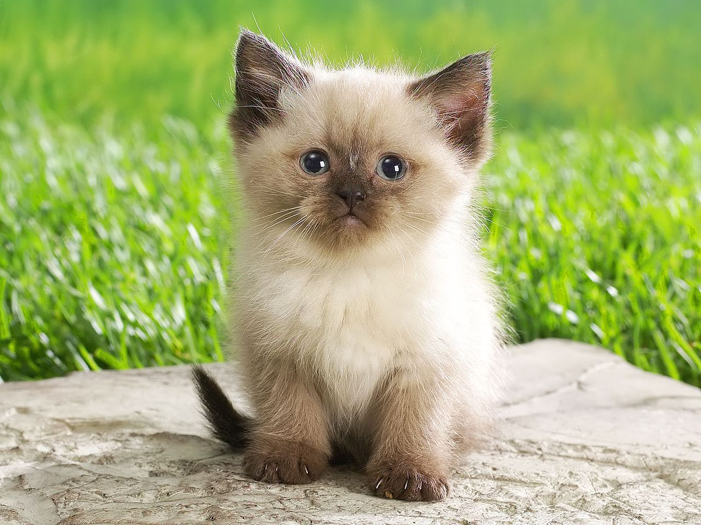

Створення простої сторінки

Бенгальській породі котів вдалося поєднувати в собі ніжність домашніх вихованців і грайливість і мисливські темпераменти диких звірів.
Найулюбленіша їхня гра – це гонитва за м'ячиком, іграшками або комахами, які залетили до квартири. До таких тварин потрібно ставитися з особливою любов'ю, інакше вони можуть вирости дуже дикими. Однак, якщо кіт бенгальської породи полюбить вас, він буде відданий вам до кінця життя.
| Країна і рік походження | США, 1961 рік |
| Тип хутра | короткошерста |
| Розмір | середній |
| Середня тривалість життя | 12-15 років |